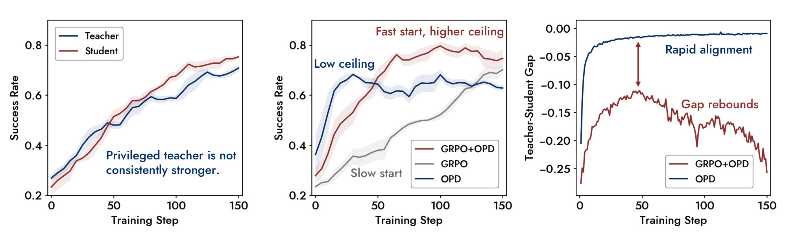
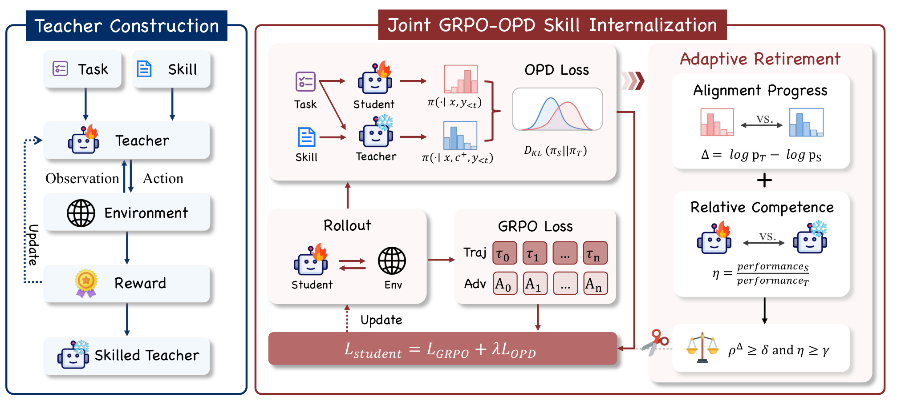
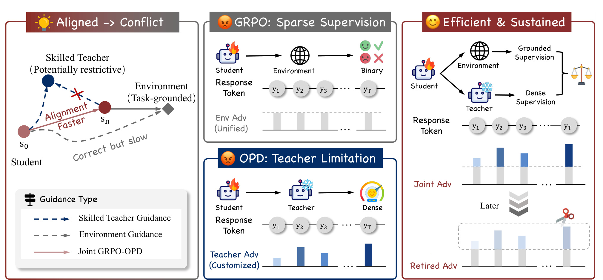
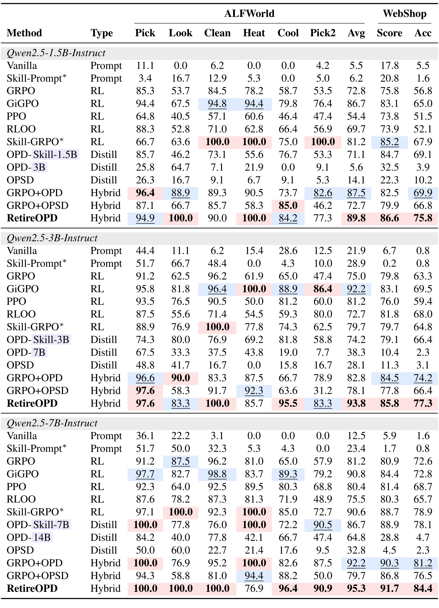
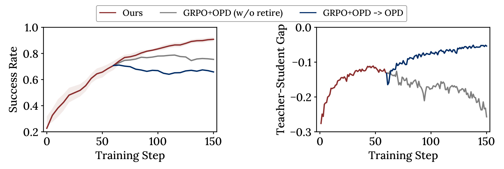
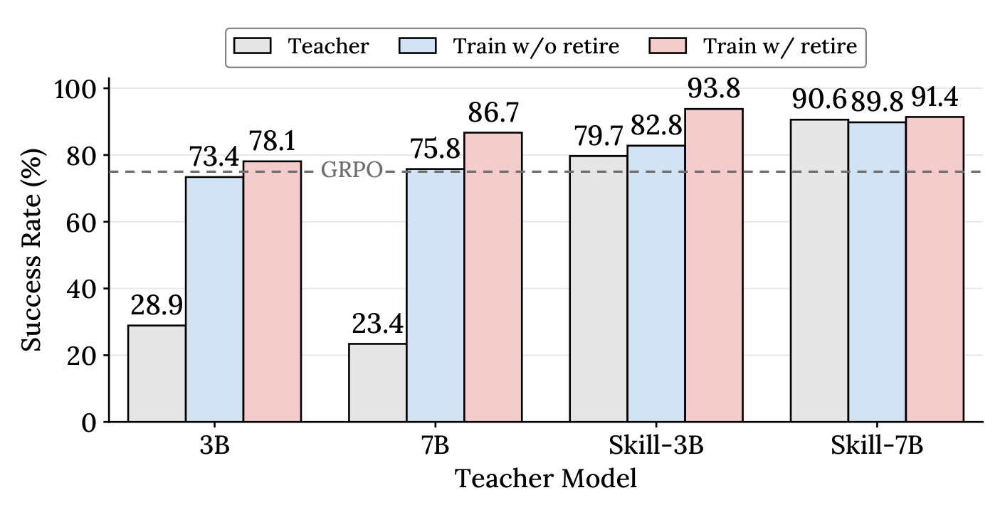
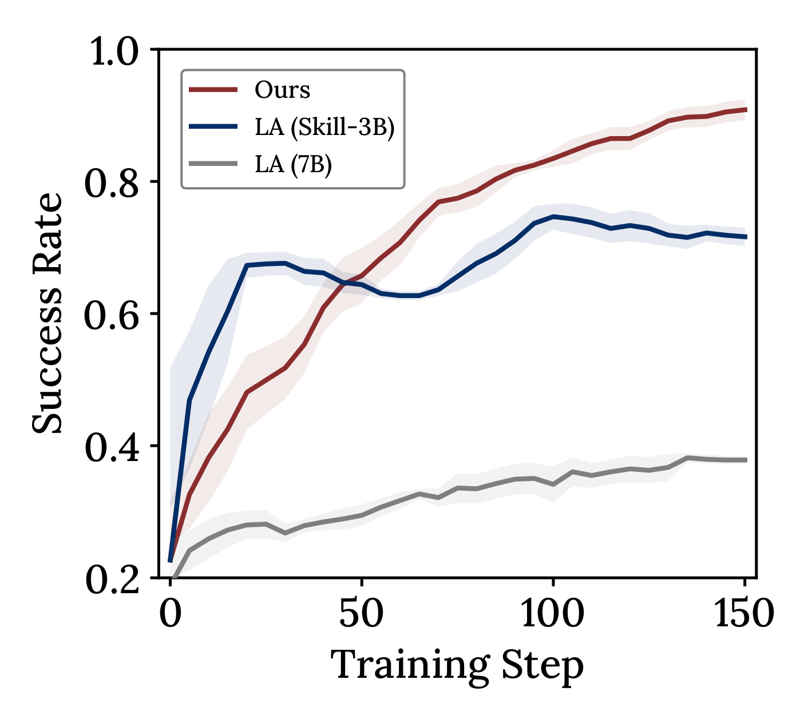
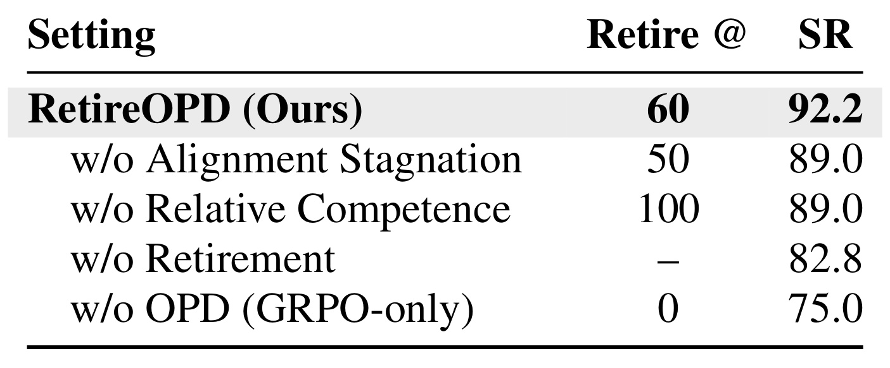
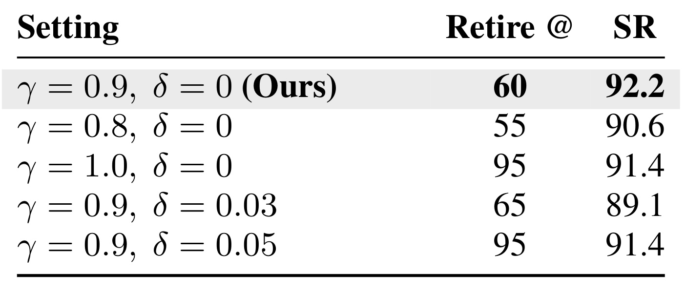
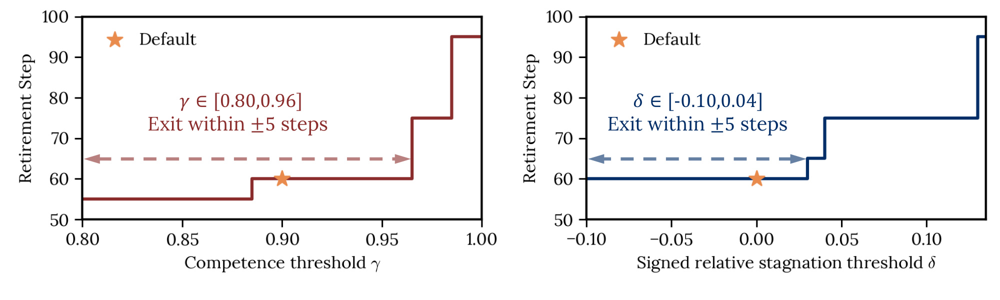

RetireOPD：让智能体在学会之后主动结束教师蒸馏
RetireOPD: Self-Retiring On-Policy Distillation for Agentic Reinforcement Learning 由浙江大学 Yan Yu、Zhengxi Lu 等人与阿里巴巴合作完成，第一版公开于 2026 年 9 月 17 日。本篇依据 21 页原文精读，论文入口为 RetireOPD。截至 2026 年 9 月 21 日，官方 SDAR 仓库已经明确列出 RetireOPD、9 月 18 日发布记录和对应结果；这是经过核验的实现入口，但本笔记没有运行训练复现。
多轮智能体只从整条轨迹得到稀疏奖励，因而需要教师提供逐词监督；但额外技能信息并不自动使教师可靠，而且教师监督的收益会随学习阶段变化。学生需要知道应该向谁学习，也需要知道什么时候应停止模仿。
1. 背景和问题
多轮智能体的学习对象是一个不断改变的交互过程。在家庭任务中，模型先寻找物体，再检查状态、移动、清洗或者加热，最后放到指定位置；在购物任务中，它先搜索商品，再浏览页面、核对属性、返回搜索结果，最终作出选择。一次任务可能包含许多正确的中间动作，却因为最后一个约束没有满足而失败；也可能依靠冗长、低效率的路径最终完成。环境通常只给整个任务一个结果分数，因此学习算法很难直接知道哪一个动作、哪一段推理或者哪一个词真正促成了成功。本文聚焦这种长交互中的监督稀疏性，而不是新的工具调用接口或新的模型架构。
GRPO 的做法是对同一个任务采样多条轨迹，根据组内回报差异形成相对优势，再提高成功轨迹中动作的概率。这能把任务的真实目标直接引入优化，但一条轨迹中的许多词共享同一个优势，信用分配仍然粗糙。尤其在初始模型很弱、整组轨迹普遍失败时，结果奖励难以区分哪些行为值得保留。教师蒸馏正好提供另一种粒度：在学生已经走到的状态上，判断学生生成的每个词是否符合一个更有信息的策略。它可以在最终任务尚未成功之前，就对动作选择产生有方向的影响，因而常被用来帮助强化学习更快启动。
这里的教师并不一定比学生参数更多。研究沿用特权上下文的设定：同一个基础模型在教师侧看到额外的任务技能说明，学生侧则只看到正常任务、观测和交互历史。技能可能提醒模型“先清洗再放置”或者“去特定容器寻找物体”。希望通过逐词蒸馏，学生把这些行为规律吸收进参数，以后不检索技能也能采取有效动作。这和单纯在推理提示中附加技能不同，后者把检索、上下文长度和知识依赖永久留在在线路径中；本文关注的是训练时有特权信息、测试时不再需要它的能力转移。
但这个设定暗含两层未经保证的推论。第一，看到技能的分支应该更会执行；第二，既然教师开始时有帮助，那么训练结束前持续匹配它也应该有帮助。作者把这两层分开检查，因为“信息更多”和“能使用信息”并不等价。若教师与学生共享参数，而更新主要来自不看技能的学生分支，参数可能从来没有学会把技能文本转化为动作。此时教师虽然上下文更丰富，却仍可能在关键决策上给出错误概率。把不可靠教师的置信度当成密集监督，还会把错误扩散到原本有机会探索出正确行为的学生上。
Figure 2 展示了这两层假设在三十亿参数模型、ALFWorld 环境中的具体问题。它位于原文引言，作用是提出研究问题，而不是展示最终方法的排行榜优势。

左图比较共享策略下带技能的教师分支与不带技能的学生分支。教师并没有一直高于学生，后半程学生曲线甚至位于教师上方。这否定了只要增加特权上下文就能稳定构造强监督者的直觉，但不意味着技能本身无效：可能缺失的是利用技能的专项训练。中图则把纯强化学习、纯蒸馏和联合训练放在一起。纯强化学习启动慢，纯蒸馏早期上升快却较早触顶，联合训练既改善启动又提高中间阶段表现。两条监督信号的互补性因此是有实验证据的，论文没有因为后期冲突就否定前期蒸馏的价值。
右图需要仔细辨认纵轴。图中的差异是教师与学生的对数概率差，数值通常为负；向零靠近代表分布趋同，远离零代表差异扩大。纯蒸馏持续把学生拉向教师，联合训练则先靠近、后偏离。这个反弹本身只能说明目标产生了不同方向的压力，不能独立证明偏离一定有益，必须再看真实成功率以及从同一检查点继续训练的分支对照。后文 Figure 4 正是为这个缺口补证据。作者把差异变化作为在线决策的候选信号，而不是用训练步数直接替代教师是否有价值的判断。
这也解释了为什么预设退火日程不能完全回答论文的问题。线性减小蒸馏系数可以逐渐释放学生，但它事先假定教师的有效期大致已知；固定某一步切换到强化学习则把这种假定进一步离散化。不同规模模型掌握技能的速度不同，同一模型在家庭任务和购物任务上的学习曲线也不同。如果仅因为到了某个步数就撤掉教师，可能在学生尚不能稳定完成任务时失去指导；如果一直等到训练接近结束，已经成熟的学生又会被教师偏好拖住。论文要改进的是这个随训练状态变化的决策环节。
需要区分“超过教师”和“凭空创造知识”。学生最终目标始终是环境回报，教师只是辅助优化方向。环境允许多种正确轨迹时，一个固定教师未必给所有正确动作同样高的概率；学生在奖励驱动下找到更有效的策略后，继续惩罚它偏离教师就会压低上限。因此，超过教师不与蒸馏相矛盾，而是说明蒸馏不再是唯一目标。本文适用前提也由此明确：环境奖励必须足够可信，撤掉教师后才有独立依据推动学生进步。若奖励本身容易被欺骗，退出教师并不保证方向正确。
对推荐与检索从业者而言，这个问题与“用复杂离线系统教轻量在线系统”有相似之处。教师可能看到更多历史、后验特征或者昂贵检索结果，学生则受在线预算限制。但本文实验是交互智能体任务，没有测量点击率、转化率或推荐满意度。可迁移的是监督源可能只在部分训练阶段有帮助的研究问题，以及需要同时监测任务能力和教师差异的思路；不能直接把家庭任务成功率的提升当作推荐效果提升。特别是在用户反馈延迟、分布变化快的场景，所谓学生能力达到教师九成的测量方式也必须重新定义。
2. 方法
2.1 先把特权教师训练成会执行技能的策略
方法按原文顺序分为教师构造、联合优化、自适应退役三个模块。输入任务为 $x$，特权技能为 $c^+$，交互轨迹为 $\tau=(x,y)$，环境回报为 $R(\tau)$。教师参数 $\phi$ 与学生参数 $\theta$ 从同一基础模型初始化，体系结构相同。教师首先在有技能的条件下接受环境奖励训练，原文公式一为：
符号解释：$x$ 是任务输入，$c^+$ 是技能上下文，$R$ 是环境回报，$\mathcal D$ 是任务分布，$\pi_\phi$ 是教师策略，$\phi^*$ 是优化后的教师参数。完成这一阶段后冻结教师，记为 $\pi_T$。学生不会直接继承教师训练后的参数，而是从基础策略出发学习不依赖技能的行为。因此教师训练不是学生的普通热启动，而是构造一个能把额外文本信息转化为有效动作的监督源。

Figure 3 左侧的环境交互闭环属于教师构造：任务和技能一起输入教师，教师采取动作，环境返回奖励，再用奖励更新教师。它与右侧学生的交互闭环是不同阶段，不能把两者的训练成本合并写成一次学生训练。中部明确显示学生自己的轨迹是蒸馏对象；教师拿到同一前缀以及额外技能之后给出分布，而不是另起一条教师轨迹，让学生被迫跟随教师到达的状态。这个设计减少了离线示范和当前学生行为之间的状态分布错位，使教师意见针对学生实际遇到的决策点。
图中两个冻结与训练图标也很重要。联合阶段冻结的是教师，继续更新的是学生，因而师生差异的变化主要来自学生学习与其访问状态的变化，不是双方同时移动的混合效应。学生通过环境交互产生的奖励提供轨迹级优势，教师概率提供词级指导，两者共同作用于同一批学生数据。右侧不是另一个推理模块，而是训练期间的监控器：它读取对齐进展和相对能力，满足条件后切断蒸馏项，环境奖励路径仍继续工作。因此最终部署保留学生和常规交互输入，技能检索、教师评分与退役监控都不是必需的在线组件。
这一结构解释了为什么解耦教师是必要的第一步。如果教师只是共享策略的带技能分支，学生更新可能同时改变教师如何解释技能，进度信号就混合了监督源漂移和学生能力变化。单独优化再冻结教师，至少提供一个固定参照。代价是维护两份模型以及额外教师训练，收益不能仅用学生后半程少做教师前向来描述。工程上还要记录技能库版本、检索策略、教师验证成功率和冻结检查点，否则相同学生配置可能因教师来源不同而得到完全不同的退役时刻。本文使用既有 SkillBank 与关键词匹配，尚未把技能质量选择本身纳入自适应优化。
2.2 在学生轨迹上联合环境奖励和逆向 KL 蒸馏
学生从不接收特权技能。联合训练把环境目标和教师约束加在同一个学生策略上，教师分布只通过冻结后的评分参与优化。这样的连接方式让奖励负责判断最终任务是否完成，让蒸馏负责提供中间词级方向；两个信号可能互补，也可能产生冲突。原文公式二给出联合目标，公式三定义组内标准化优势：
符号解释：$\theta$ 是学生参数，$\mathcal L_{\mathrm{GRPO}}$ 是奖励驱动损失，$\mathcal L_{\mathrm{OPD}}$ 是教师蒸馏损失，$\lambda$ 是两者相对权重。它不是概率混合系数，也不要求两项权重和为一；两项梯度的实际强度还取决于优势尺度与词级概率差。下一式用同一任务的一组轨迹定义奖励优势，以减少不同任务原始分数尺度的干扰。
符号解释：$\widehat A^{(i)}$ 是第 $i$ 条轨迹的相对优势，$R(\tau^{(i)})$ 为轨迹回报，$G$ 表示同一任务的轨迹组大小，$i$ 为轨迹序号，$\lambda$ 控制教师权重。优势分母是组内回报标准差，论文主式没有写出全组同奖时的数值稳定处理，复现应检查代码。令 $r_t^{(i)}$ 为当前策略与采样行为策略对同一词的概率比，GRPO 通过裁剪约束每次更新：
符号解释：$r_t^{(i)}$ 为当前与行为策略的词概率比，$\epsilon$ 为裁剪幅度，$|y^{(i)}|$ 为该轨迹的响应长度，$t$ 为词位置。裁剪限制有利方向上的过大更新，防止一次训练把当前策略推离采样策略太远。每条轨迹先按长度平均再在组内平均，避免长输出仅凭词数获得更多权重。原文公式五使用学生到教师的逆向 KL：
符号解释：$\pi_\theta$ 是学生，$\pi_T$ 是冻结教师，$c^+$ 只提供给教师，$y_{<t}$ 是双方共享的学生轨迹前缀；$D_{\mathrm{KL}}$ 对整个词分布定义，而不是只比较最终动作名称。双方面对同一个学生访问状态，才能把监督差异解释为条件信息与策略能力的差异。全词表 KL 代价较高，因此只在学生实际采样的词上评价两模型对数概率，得到原文公式六：
符号解释：$\Delta_t$ 是教师减学生的采样词对数概率差，$y_t$ 是学生实际采到的第 $t$ 个词。在学生分布下，$-\Delta_t$ 是对应位置逆向 KL 的单样本估计；单个词的估计不必非负。这里的目标表达与实际反向传播估计应分开理解：学生采样分布依赖参数，不能仅把缓存的两个对数概率相减后随意反传，就宣称实现了完整 KL 目标。复现需要核对采样策略、停止梯度和策略梯度形式。

Figure 1 左侧把策略移动画成几何路径。教师把学生从很弱的初始位置拉向较好的行为区，环境奖励则指向实际任务目标；早期两者的方向大体一致，联合更新可以更快移动。之后学生已经到达教师能够有效指导的位置，继续朝教师分布靠拢就可能与更高奖励的方向分离。这个示意图不表示真实参数空间只有两维，也不是经过测量的梯度夹角，而是解释两种目标为何可能存在阶段性冲突。其价值在于提醒读者：教师更确定地反对某个词，并不代表该词在当前状态下必然有害。
中间两栏比较监督粒度。环境回报通常给整条响应统一的优势，因此灰柱的高度相同；教师对不同词的偏好不同，因此蓝柱有不同强度。右侧联合优势保留了两者，退役后则去掉教师成分。重要的是“去掉密集监督”不等于“停止训练”，也不等于把所有词都放任不管：后续仍有任务回报提供更新方向。相反，继续纯蒸馏虽然可以把分布差异压得更小，却有可能损害任务成功率。这使本文的训练目标始终以可验证任务表现为最终标准，而不把低蒸馏损失当成最终目标。
附录的局部分析把这一解释写成梯度关系：奖励梯度与差异梯度方向发生冲突时，联合更新的一阶回报增量可能小于只用奖励的更新。但它假定局部步长足够小、忽略有限样本噪声，并暂不考虑裁剪生效的复杂情形。因此图中的“冲突点”不是一个可以保证全局最优的数学边界。实际算法不用昂贵的完整梯度夹角，而是用对数概率差趋势和验证成功率作为代理。两个代理之间的互补、噪声和失效条件都需要由后续消融检验，不能从概念图直接推出退出判据必然准确。
2.3 对齐停滞与相对能力同时达标时退役
原文公式七先对一条轨迹内的词求均值，再对组求均值，得到每一步的 $K_n$；每个监控窗口含 $W$ 步，窗口平均记为 $\bar K_m$。这个分层聚合不把长轨迹的更多词数直接当作更多决策票数，也减少某一次随机采样对整体退出判断的影响，但不消除不同状态分布变化带来的偏差：
符号解释：$n$ 为训练步，$m$ 为监控窗口，$W$ 为窗口步数，$G$ 为轨迹数，$K_n$ 为步平均，$\bar K_m$ 为窗口平均。这些量是带符号的对数概率差，期望意义上约等于负的逆向 KL，而不是正距离。原文公式八同时构造变化率和相对能力，$SR_m$ 是学生第 $m$ 次验证成功率，$SR_T$ 是冻结教师的验证成功率：
符号解释：$\rho_m^{(K)}$ 是差异相对变化率，$\eta_m$ 是两次学生成功率均值相对冻结教师的比例。教师分母使用带技能验证表现，因此这一比值衡量学生能否在少看信息时达到教师的大部分能力。当 $\bar K$ 从负零点二靠近负零点一，分子为正、分母为负，变化率为负，表示仍在对齐；若从负零点一退回负零点二，变化率为正，表示差异扩大。这是原文“负值仍有进展，非负表示停滞或反转”的符号前提。若窗口估计接近零、跨过零，或者教师成功率为零，这两个比率会不稳定；原文没有给出完整的分母保护规则。不能把正 KL 与负对数差混用，也不能在复现时默默加保护项后仍声称完全忠实于原式。退出条件采用两个信号的逻辑与，默认差异门限 $\delta=0$、能力门限 $\gamma=0.9$，原文公式九为：
符号解释：$m^*$ 为首次满足条件的监控窗口，$\delta$ 是变化率门限，$\gamma$ 是相对能力门限，逻辑与要求两个条件同时成立。至少需要两个窗口才能计算变化和两次验证均值；退出后标志永久置位，不再重新引入教师。若条件始终未满足，则继续联合优化到训练结束。窗口平均缓解逐词和逐轨迹噪声，能力门限则防止学生尚未掌握任务时因差异偶然停滞而过早退出。但能力达到教师九成只是相对门槛：教师很弱时九成也很弱，教师很强或验证分布变化时门槛又可能难以达到。教师构造、验证集选择与退出机制因此不能独立配置。部署时没有这个判据，最终只输出不看技能的学生策略。
3. 实验结果
3.1 六个模型与环境组合的主结果
实验覆盖 Qwen2.5-Instruct 的 1.5B、3B 和 7B 三个规模，以及 ALFWorld、WebShop 两个交互环境。前者测家庭指令完成，后者测约束购物与信息收集。附录 Table 4 给出学习率百万分之一、轨迹组大小八、训练批大小十六、验证样本一百二十八、训练一百五十步、窗口五和蒸馏权重百分之一。SkillBank 来自已有 SkillRL，技能检索沿用关键词匹配。原文主表把直接提示、奖励学习、纯蒸馏与混合方法放在一起；星号表示验证时仍可看技能，比较时要区别于最终无技能学生。

Table 1 最明确的结论是总体指标的六个组合均有提升。ALFWorld 的学生成功率分别为百分之八十九点八、九十三点八、九十五点三，对应 GRPO 为七十二点八、七十五点零、八十一点二，即提升十七点零、十八点八、十四点一个百分点。WebShop 的准确率分别为七十五点八、七十七点三、八十四点四，对应 GRPO 为五十六点八、六十三点三、七十二点六，即提升十九点零、十四点零、十一点八个百分点。这些是绝对百分点，不是相对百分比。例如三十亿参数在家庭任务中从百分之七十五到九十三点八，不能写成相对增长百分之十八点八。
教师对照也值得单独看。三十亿参数带技能教师在两个任务的指标是七十九点七和六十四点八，学生最终达到九十三点八和七十七点三；这里的超过并不是比较更大的教师与更小的学生，而是在相同容量下，学生通过奖励优化摆脱教师约束。持续联合训练在这一规模上分别为八十二点八和七十四点二，因此退役带来的增量在两个环境并不相同。相对更强的 GiGPO，三十亿参数家庭任务的差距只有一点六个百分点，远小于对普通 GRPO 的十八点八。引用最大改进时必须保留基线名称，否则会掩盖强基线已解决部分稀疏奖励问题的事实。
总体最优也不代表每个子任务最优。七十亿参数模型的 Heat 为七十六点九，明显低于持续联合训练和技能教师的一百分；而其总体成功率仍最高。平均改善掩盖局部退化，说明退出教师可能在不同技能上产生不同影响。主表还同时报告 WebShop Score 与 Acc，两者分别反映得分和完全满足条件的准确率，不应互换。表内未给出完整的多随机种子置信区间，部分子项样本较小，所以不能把很小的差距解释成稳定优势。若复现，只看总分会错失退役后某类技能遗忘的风险，应保留六类家庭任务的细分结果。
3.2 从同一退出检查点分叉，辨认真正有益的方向
主结果证明方法组合有效，却不能解释“学生离教师更远”到底是学好了还是学坏了。作者在退出点继续三种训练：保留联合目标、只保留蒸馏、或者按本文只保留强化学习。Figure 4 把成功率和师生差异并列，直接检验后半程应该保留哪个目标。

左图显示，只保留环境奖励的红线继续上升，持续联合目标的灰线进入平台，仅保留教师蒸馏的蓝线没有继续提高。正文报告三十亿参数家庭任务在退出点的成功率为百分之七十六点六，退出后达到九十三点八。右图中，纯蒸馏让带符号差异更接近零，持续联合则越来越偏离教师。这组对照说明，在该检查点之后，更严格的教师对齐与更好的任务表现已经不再一致。观察到分布差异扩大并不自动意味着训练失控；必须与目标指标联合解释。
这种设计比拿两个完全独立的训练终点相减更有说服力，因为分支共享退出前的训练历史，可以减少早期探索差异干扰。它仍不能排除后续采样方差，也不能证明任意任务在差异首次回升时都该停止教师监督。图中退出后红线没有完整展示对应差异轨迹，不能由此推算教师评分调用量，也不能把曲线水平距离转换成训练时间加速。横轴是优化步数，单步里生成长度、环境交互成本和教师前向成本都可能变化。论文支持的是学习效果的阶段性变化，而不是一个经过端到端计时的效率倍数。
附录第十五页给了更直观的个例：学生成功轨迹中向微波炉移动的动作得到教师强烈负向评价，却与环境成功一致。这为分支实验提供机制解释，但单个例子不能代表所有冲突。它提示教师可能学到某种典型路径，对另一个有效路径分配很低概率，长期蒸馏就会让学生回避这种探索。工程上可以把类似分歧状态保存下来，区分“教师偏好不同”与“学生确实越界”，再决定是否需要动作级保护。本文选择全局退出，尚未研究只对剩余薄弱技能保留教师的选择性策略。
3.3 教师会不会用技能，比参数量本身更关键
Figure 5 固定学生研究不同教师来源，包括未经环境训练的三十亿、七十亿参数教师，以及经过技能条件奖励训练的对应教师；同时比较始终蒸馏与允许退役。它将“监督源质量”和“监督持续时间”两个因素放到同一张图中。

灰色教师柱表明，仅在提示里加技能时，三十亿和七十亿教师成功率只有百分之二十八点九与二十三点四。更大的模型并没有自然成为更可靠的任务执行者。经过有技能的奖励训练后，两者分别达到七十九点七与九十点六，信息优势才转化为行为优势。蓝色学生柱则说明始终蒸馏时学生明显依赖教师质量：技能三十亿教师对应八十二点八，技能七十亿教师对应八十九点八。这个差距符合“教师上限会传给学生”的直觉，也解释了为什么本文不直接对未经训练的特权分支做蒸馏。
允许退役后，粉色学生柱进一步提高，技能三十亿教师对应九十三点八，技能七十亿对应九十一点四。至少在图示实验中，较强教师没有保证较高最终学生结果，说明后半程仍由学生探索和奖励优化决定。作者第九页相关段落把前一个退役结果写成九十二点二，与 Figure 5 的九十三点八并不相同。这里应把图表原数分别保留，不能擅自解释为不同随机种子、不同检查点或笔误。它不改变“退役减弱长期教师依赖”的定性观察，但限制了跨表拼接精确增量的可靠性。
附录的清洗动作案例进一步说明教师训练在什么位置起作用。相同学生轨迹、相同关键动作词 clean，经过训练的技能教师对数概率为负零点八二六，未充分利用技能的自蒸馏教师为负十六点六二五。这个差异出现在“先清洗再放置”的决策点，普通导航动作的评分差异较小。因此教师构造的价值不只是平均分布更自信，而是能否在少数决定任务成败的词上给出正确监督。不过这是选择出来的代表案例，尚未统计这类关键词的比例、召回率或错误指导率；不能据此声称所有词级反馈都更准确。
3.4 自适应退出与线性退火的区别
作者用 ATOD 的线性退火形式替换自适应策略，其他主要实验条件保持一致。附录给出的日程在前八十步把强化学习权重从零点一增加到一点一，把蒸馏权重从一点零降低到零点一，之后两者保持常数。Figure 6 展示这类预定日程与真正去掉教师的区别。

使用技能三十亿教师的线性退火曲线在初期上升很快，之后趋于平台；本文红线开始并非始终最高，却在后半程持续提高。使用未经充分训练的七十亿教师时，灰线整体更低，说明日程无法弥补教师不可靠的问题。这里包含两个相关但不同的结论：监督权重随时间变化有帮助，但固定变化未必与学生学习状态匹配；教师构造仍决定了早期密集监督是否有价值。不能因为一种退火配置落后，就推断所有平滑日程或所有蒸馏权重搜索都不如硬退出。
还要注意该对照没有把“什么时候退出”和“是否彻底退出”完全分开。线性退火到末期仍保留零点一的蒸馏权重，强化学习系数也变成一点一；本文则真正删除蒸馏项。因此差异可能同时来自动态时机、残余教师约束、以及目标尺度变化。要单独量化自适应时机的价值，还可以在相同教师上对比固定步数完全退出、固定步数平滑归零、在线检测后平滑归零等设置。这些是后续实验建议，本文没有完成该组穷尽对照，不能把可能的结果当成已验证事实。
从部署角度看，末期持续非零蒸馏通常仍需教师评分，而硬退出能消除这部分后续调用，这是结构层面的成本优势。但教师预训练、周期验证、学生轨迹生成和环境交互仍需计算资源，图中没有总 GPU 小时或总前向词数。曲线上相同步数也不等价于相同训练成本。因此最保守的效率表述是“退出后不再需要用于蒸馏的教师前向”，而不是“总体训练更便宜”或“速度提升某个百分比”。尤其当教师只服务一次短训练时，构造教师的额外投入可能抵消后半程节省。
3.5 两个退出信号是否都必要
Table 2 分别移除对齐停滞条件、相对能力条件、整个退役机制以及全部蒸馏。在这张消融表中，完整方法于第六十步退出，最终成功率为百分之九十二点二。以下比较全部限定在本表内部，不与主表九十三点八混作同一个运行结果。

不检查对齐停滞时，第五十步退出，成功率百分之八十九点零；不检查相对能力时，第一百步退出，同样为八十九点零。完整双条件结果更高，说明本文设置下两个信号组合比单独使用更好。始终保留教师得到八十二点八，不用教师的纯 GRPO 为七十五点零，因此单纯“从一开始不用教师”和“先学再退役”差距明显。这组结果支持教师作为阶段性辅助的解释，也让退役收益与早期教师收益得以分开观察。
不过表格包含一个需要复现澄清的细节。对完全相同、未退出之前的联合训练轨迹，逻辑上删去一个合取条件通常不会让首次满足时刻更晚；表中移除相对能力却从六十步变为一百步。可能存在不同随机运行、监测实现变化或实验配置差异，但论文没有给出足够说明，不能替作者补一个确定原因。正确做法是保留原表、报告定性趋势，并在复现中记录每次监测的两个原始条件、联合条件和状态切换日志。这样才能区分判据本身的作用和训练噪声引起的轨迹变化。
这里也说明只报告一个“退出步数”远远不够。需要知道该步之前学生成功率相对于教师的比值、差异估计符号、窗口长度、是否有回报方差退化，以及冻结教师是否始终一致。全局退役是不可逆状态切换，一次偶然触发就会改变后续数据分布；后续性能下降并不能再简单归因于删除教师本身。本文通过窗口平均和双信号降低误触发风险，但没有给出误报率或重启教师的恢复机制。对于错误代价高的智能体，更稳妥的研究起点是保存切换前检查点并进行分支验证，而非把这一表直接当成任何训练任务都能自动安全退出的证明。
3.6 阈值敏感性与论文内部数值边界
Table 3 改变相对能力门限和带符号停滞门限。默认相对能力九成、停滞门限零，退役步数六十，成功率九十二点二；它提供了算法对参数变化的有限证据，而不是参数无关性的证明。

相对能力门限降低到八成时，退出提前到第五十五步，成功率九十点六；提高到与教师相当时，退出延迟到第九十五步，成功率九十一点四。保持能力门限九成，把停滞门限提高到零点零三时，第六十五步退出，成功率八十九点一；提高到零点零五时，第九十五步退出，成功率九十一点四。这些结果表明更晚退出不一定更好，退出时间与最终分数不存在简单单调关系。它们也表明默认配置在该表中最好，但不能据此推断在新环境仍最佳。
论文将百分之八十九点一到九十二点二描述为相对稳定的范围。这个判断应结合任务实际要求：三点一个百分点对于学术基准可能小于不同算法的大差距，对于严格的产品成功率目标仍可能很重要。表中没有给出各配置重复运行的方差，因此无法判断门限效应与随机波动各占多少。另一方面，这组对照只改变少数离散值，没有联合扫描两个门限，更没有改变窗口长度和验证集规模。所谓稳健性证据覆盖的是列出的设置，不能扩展成整个超参数空间都不敏感。
有一个实现上容易误读的地方：正的停滞门限不是“KL 必须小于某个值”，而是要求带符号差异的相对变化达到某个水平。它衡量的是趋势，不是绝对接近程度。因此较大的门限往往等待更明确的反弹，但受负分母大小影响，相同的绝对差异变化会产生不同变化率。学生越接近教师、分母越小，数值可能越敏感。这使阈值必须与窗口统计方式一同记录。若使用正 KL 重新定义变化率，必须重推符号方向后再验证，不应照搬表中的门限数值和大于等于关系。
3.7 退出时间的稳定区，以及尚未量化的总成本
Figure 7 进一步画出三十亿参数设置的退出步数随门限变化的曲线。原图横轴分别是能力门限和停滞门限，纵轴是退休步数，星号表示默认点；它关心的是何时切换，不是切换后的最终成功率。

两条曲线都有明显阶梯。这与每五步监测一次的机制一致，门限的小变化未必改变首次通过的监控窗口。作者标注能力门限从零点八零到零点九六、停滞门限从负零点一零到零点零四时，退出时刻相对默认点保持在正负五步范围内。这是对在线判据不必精确卡住某一个小数值的支持，也解释了为什么动态监控比预设一个通用于所有环境的切换步数更自然。它仍然只是特定设置的阈值扫描，不等价于跨任务、跨随机种子稳定性。
阅读图表时还应保留内部差异：Table 3 的停滞门限零点零五对应第九十五步，而 Figure 7 在附近显示约七十五步的平台。原文没有说明是否来自独立运行或不同数据处理，所以两处精确步数口径不可直接合并。此外，图里的“正负五步”只描述退役时间，不代表性能误差也很小。两个门限可能产生同一个退出点，却因为前期随机采样或检查点选择得到不同分数；反过来，退出时刻不同也可能最终达到相近表现。复现报告最好同时绘制原始监控量、退出分布与最终任务分数，而不是只展示一个门限扫描图。
附录展示六个模型环境组合的验证轨迹，标出的退出步数在六十到九十之间：家庭任务三个模型为七十五、六十、六十，购物任务为九十、八十、八十五。按照一百五十步学生训练粗看，确实有相当一段后期不再需要教师蒸馏评分；但这只是调用阶段的缩短，不能把剩余步数比例直接当作计算节省比例。原文没有独立汇总教师构造总预算、不同轨迹长度、验证费用、总 GPU 小时或环境吞吐。因此效率主张仍停留在操作层面的减少教师前向，缺少完整经济账。后续最有价值的补充不是再次报成功率，而是固定总算力、同时计入教师训练后与强强化学习基线比较。
4. 总结
RetireOPD 把特权知识蒸馏中的两个问题拆开处理：先确保教师真的会利用额外技能，再让学生根据学习状态决定何时结束模仿。独立训练并冻结教师提供较稳定的参照，学生轨迹上的逐词蒸馏改善早期探索，而双信号退役让后半程回到环境目标。六个主要模型环境组合的总体指标均有提升，且学生最终超过对应带技能教师。最值得记住的不是某个退出步数，而是教师的价值应该由任务收益和学习阶段共同判断，蒸馏损失更低并不总意味着任务能力更好。
对大模型后训练，这项工作提供了一个清楚的实验范式：当辅助损失前期有效、后期可能压制主目标时，从同一检查点分叉继续训练，比只比较最终终点更有解释力。辅助监督来自检索技能、参考答案或昂贵模型时，都可以提出类似问题。但本文的两个代理量不应直接推广到全部训练。尤其当教师分布覆盖不全、学生采样发生较大漂移、奖励噪声较高时，分布差异变化可能混入其他因素。采用在线退出之前，应先确认任务验证指标足够稳定，且教师相对能力具有可比口径。
对推荐系统，潜在价值在于审视离线强教师对在线轻量模型的长期约束。教师可以拥有完整历史、昂贵交叉特征或者后验信息，早期帮助学生建立有用表征；学生若随后得到更接近线上目标的反馈，也许无需永久保持教师偏好。但这只是迁移假设。推荐反馈包含曝光选择偏差、位置影响和延迟转化，远不如模拟环境回报直接。若把点击率当作教师退役能力指标，还需保证流量分配、用户分层和时间窗口一致，否则比率变化可能来自数据分布而不是学习完成。
复现需要优先处理三个具体缺口。第一，核对带符号差异与逆向 KL 的对应、近零分母保护、全组同奖时优势归一化，以及每个窗口的索引约定；这些细节会直接改变退出条件。第二，保存教师构造与学生训练的分账成本，再比较相同总预算下的效果，避免把额外教师训练视作免费。第三，澄清主表、教师消融和阈值表之间的数值差异，并在多随机种子下报告退出时刻分布与细分技能退化。当前材料支持定性机制，但部分精确数字不能跨表拼接成单一训练轨迹。正式使用之前还应冻结验证任务集合，确保教师和学生的成功率来自相同难度分布；对低频失败类别单独计数，避免总体九成能力掩盖关键动作不足。若需要在新任务上恢复教师，应将其作为一个新的训练策略独立评估，因为原算法的退出是永久性的，没有验证重新接入监督后的稳定性。
后续可以从官方实现的教师训练和学生训练两阶段脚本开始，先复现三十亿参数家庭任务，并重现 Figure 4 的同点分支；再检查退出后 Heat 等细分技能是否稳定退化，最后扩展到更复杂的网页或工具环境。模型规模只覆盖到七十亿参数，环境也只有两个标准基准，尚没有开放网络任务、真实用户购物、线上推荐或安全敏感工具操作的证据。本文值得跟进的方向是监督生命周期的测量与控制，现阶段不能把它当成所有智能体都应永久抛弃教师的统一训练处方。